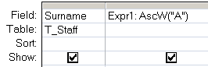

Function that returns the Unicode which represents a specific character.
Syntax
AscW (string)
AscW ("A") will return 65
The AscW() function can be used in VBA or in an SQL query.
Examples
In a query:

In VBA:
Dim intDemo As Integer
intDemo = AscW ("A")
> 65
intDemo = AscW ("ABC")
>
65
“I've nothing much to offer, There's nothing much to take, I'm an absolute beginner” ~ David Bowie
Related:
Asc - Return Ascii code for string
Chr - Return a character based on an ASCII code.